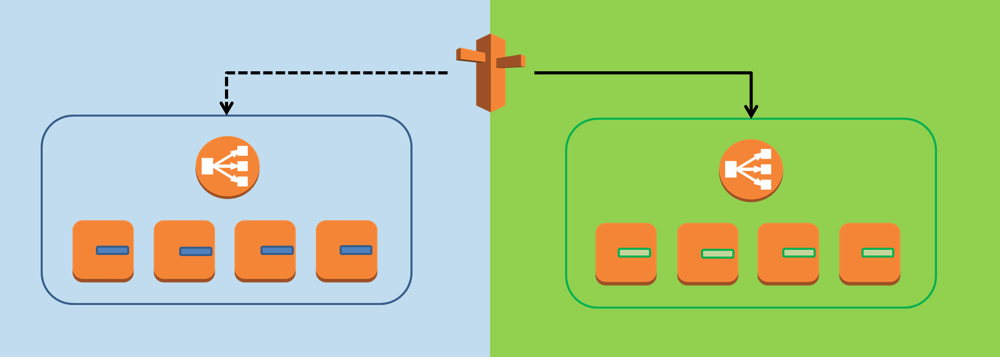

<?xml version="1.0" encoding="utf-8"?>
<rss xmlns:atom="http://www.w3.org/2005/Atom" version="2.0">
    <channel>
        <title>Blog</title>
        <link>https://archive.fbrnc.net/blog.rss</link>
        <description>Fabrizio Branca</description>
        <language>en-us</language>
        <atom:link href="https://archive.fbrnc.net/blog.rss" rel="self" type="application/rss+xml"/>
                        <item>
            <title>Green/Blue Deployments with AWS Lambda and CloudFormation - done right.</title>
            <link>https://archive.fbrnc.net/blog/2016/05/green-blue-deployments-with-aws-lambda-and-cloudformation</link>
            <description>
                <![CDATA[
                                
                                <p>If you heard me speak lately or browsed through some of <a href="http://www.slideshare.net/aoepeople/presentations">my slidedecks</a> chances are high you've seen this slide and heard me talk about "immutable deployments":</p>
<p><a rel="lightbox" href="user/pages/01.blog/2016/05/01.green-blue-deployments-with-aws-lambda-and-cloudformation/greenblue.png"></a></p>
<p>The basic idea is to separate the "disposable" parts of your infrastructure from the "non-disposable" parts (e.g. databases, message queues…</p>
                ]]>
            </description>
            <category>AWS,CloudFormation,Lambda</category>
            <guid>https://archive.fbrnc.net/blog/2016/05/green-blue-deployments-with-aws-lambda-and-cloudformation</guid>
            <pubDate>Wed, 25 May 2016 00:00:00 +0200</pubDate>
        </item>
                        <item>
            <title>Messaging on AWS</title>
            <link>https://archive.fbrnc.net/blog/2016/03/messaging-on-aws</link>
            <description>
                <![CDATA[
                                
                                <p>or: "What's the difference between SQS, Kinesis, and SNS?"</p>
<p>One of the core principles of "cloud-native" applications is "loose coupling". Let's explore what AWS has to offer and how they various options differ from each other.</p>

                ]]>
            </description>
            <category>AWS,SNS,SQS,Kinesis,Microservices,Architecture</category>
            <guid>https://archive.fbrnc.net/blog/2016/03/messaging-on-aws</guid>
            <pubDate>Tue, 22 Mar 2016 00:00:00 +0100</pubDate>
        </item>
                        <item>
            <title>Immutable Deployments with AWS CloudFormation and AWS Lambda</title>
            <link>https://archive.fbrnc.net/blog/2016/03/immutable-infrastructure-cloudformation</link>
            <description>
                <![CDATA[
                                <iframe src="//www.slideshare.net/slideshow/embed_code/key/xtHkyi57pNXu9K" width="747" height="458" frameborder="0" marginwidth="0" marginheight="0" scrolling="no" style="border:1px solid #CCC; border-width:1px; margin-bottom:5px; max-width: 100%;" allowfullscreen=""> </iframe> <div style="margin-bottom:5px"> <strong> <a href="http://www.slideshare.net/aoepeople/immutable-deployments-with-aws-cloudformation-and-aws-lambda" title="Immutable Deployments with AWS CloudFormation and AWS Lambda" target="_blank">Immutable Deployments with AWS CloudFormation and AWS Lambda</a> </strong> from <strong><a target="_blank" href="http://www.slideshare.net/aoepeople">AOE </a></strong> </div>

San Francisco AdvancedAWS Meetup, 2016-03-17 
                ]]>
            </description>
            <category>AWS,CloudFormation,Lambda</category>
            <guid>https://archive.fbrnc.net/blog/2016/03/immutable-infrastructure-cloudformation</guid>
            <pubDate>Fri, 18 Mar 2016 00:00:00 +0100</pubDate>
        </item>
                        <item>
            <title>Continuous Load Testing and Monitoring</title>
            <link>https://archive.fbrnc.net/blog/2016/03/continuous-load-testing</link>
            <description>
                <![CDATA[
                                
                                
                ]]>
            </description>
            <category>AWS,CloudFormation,JMeter,Lambda</category>
            <guid>https://archive.fbrnc.net/blog/2016/03/continuous-load-testing</guid>
            <pubDate>Thu, 03 Mar 2016 00:00:00 +0100</pubDate>
        </item>
                        <item>
            <title>What&#039;s wrong with AWS OpsWorks?</title>
            <link>https://archive.fbrnc.net/blog/2016/01/whats-wrong-with-aws-opsworks</link>
            <description>
                <![CDATA[
                                
                                <p>Let me start with a note: I actually really like OpsWorks. I like getting things done quick and easily and the clean domain model (layers != instances != apps != deployment). We run a couple of Magento stores (medium-sized and large ones) on OpsWorks and we never had any major problems with it. Howe…</p>
                ]]>
            </description>
            <category>AWS,OpsWorks,CloudFormation</category>
            <guid>https://archive.fbrnc.net/blog/2016/01/whats-wrong-with-aws-opsworks</guid>
            <pubDate>Tue, 05 Jan 2016 00:00:00 +0100</pubDate>
        </item>
                        <item>
            <title>Rock-solid Magento Development and Deployment Workflows</title>
            <link>https://archive.fbrnc.net/blog/2015/10/rock-solid-magento-development-and-deployment</link>
            <description>
                <![CDATA[
                                <iframe src="//www.slideshare.net/slideshow/embed_code/key/kdKAAMBIaRf0zx" width="747" height="458" frameborder="0" marginwidth="0" marginheight="0" scrolling="no" style="border:1px solid #CCC; border-width:1px; margin-bottom:5px; max-width: 100%;" allowfullscreen=""> </iframe> <div style="margin-bottom:5px"> <strong> <a href="http://www.slideshare.net/aoepeople/rocksolid-magento-development-and-deployment-workflows" title="Rock-solid Magento Development and Deployment Workflows" target="_blank">Rock-solid Magento Development and Deployment Workflows</a> </strong> from <strong><a target="_blank" href="http://www.slideshare.net/aoepeople">AOE </a></strong> </div>

ZendCon 2015 - Las Vegas 
                ]]>
            </description>
            <category>Magento</category>
            <guid>https://archive.fbrnc.net/blog/2015/10/rock-solid-magento-development-and-deployment</guid>
            <pubDate>Mon, 26 Oct 2015 00:00:00 +0100</pubDate>
        </item>
                        <item>
            <title>How to Provision an EC2 Instance</title>
            <link>https://archive.fbrnc.net/blog/2015/11/how-to-provision-an-ec2-instance</link>
            <description>
                <![CDATA[
                                
                                <p>There are many ways how to provision an EC2 instance. And with "provision" I mean "getting everything ready" by installing and configuring all required software and your build in an automated, reproducible way - no, launching an EC2 instance in the AWS Console, logging in via SSH and manually instal…</p>
                ]]>
            </description>
            <category>AWS,DevOps,Infrastructure as Code,CloudFormation</category>
            <guid>https://archive.fbrnc.net/blog/2015/11/how-to-provision-an-ec2-instance</guid>
            <pubDate>Wed, 14 Oct 2015 00:00:00 +0200</pubDate>
        </item>
                        <item>
            <title>Some thoughts on SUPER-scaling Magento, and a little bit of everything else...</title>
            <link>https://archive.fbrnc.net/blog/2015/10/super-scaling-magento</link>
            <description>
                <![CDATA[
                                
                                <p><em>Here are some early thoughts about this and that. The more I think about it the clearer some of the things become. And still there are hundreds of open questions. Follow me through this journey trying to figure out what's the right thing to do for our next big project...</em></p>

                ]]>
            </description>
            <category>Magento,AWS,Scaling</category>
            <guid>https://archive.fbrnc.net/blog/2015/10/super-scaling-magento</guid>
            <pubDate>Wed, 14 Oct 2015 00:00:00 +0200</pubDate>
        </item>
                        <item>
            <title>$block-&gt;setCacheLifetime(null);</title>
            <link>https://archive.fbrnc.net/blog/2015/06/cache-and-layout-xml-tricks</link>
            <description>
                <![CDATA[
                                
                                <p>Did you ever try to make a block that is cached by default <em>uncacheable</em>? Let's play a little bit with caches and layout xml and you might learn a trick or two along the way...</p>
<p>First of all: Why would you want to make a block uncacheable?! - Just because you can :)
And here's an example:</p>
<p>Let's look at…</p>
                ]]>
            </description>
            <category>Magento,Caching,Tricks</category>
            <guid>https://archive.fbrnc.net/blog/2015/06/cache-and-layout-xml-tricks</guid>
            <pubDate>Thu, 11 Jun 2015 00:00:00 +0200</pubDate>
        </item>
                        <item>
            <title>&quot;Open source wins every day. Every time.&quot;</title>
            <link>https://archive.fbrnc.net/blog/2015/04/open-source-wins-every-day-every-time</link>
            <description>
                <![CDATA[
                                
                                <p>Seat 10C. On my way back home to San Francisco from <a href="http://imagine2015.magento.com/">Imagine Commerce 2015 in Las Vegas</a>. </p>
<p><strong>This conference was a blast.</strong> </p>
<p>Flying home feels like coming home from a big scout summer camp. I met so many interesting people, old and new friends and had some truly inspiring discussions. I feel my brain is e…</p>
                ]]>
            </description>
            <category>Magento,Open Source</category>
            <guid>https://archive.fbrnc.net/blog/2015/04/open-source-wins-every-day-every-time</guid>
            <pubDate>Sat, 25 Apr 2015 00:00:00 +0200</pubDate>
        </item>
            </channel>
</rss>
<!-- Generated: 2016-07-24T06:30:11+02:00 -->